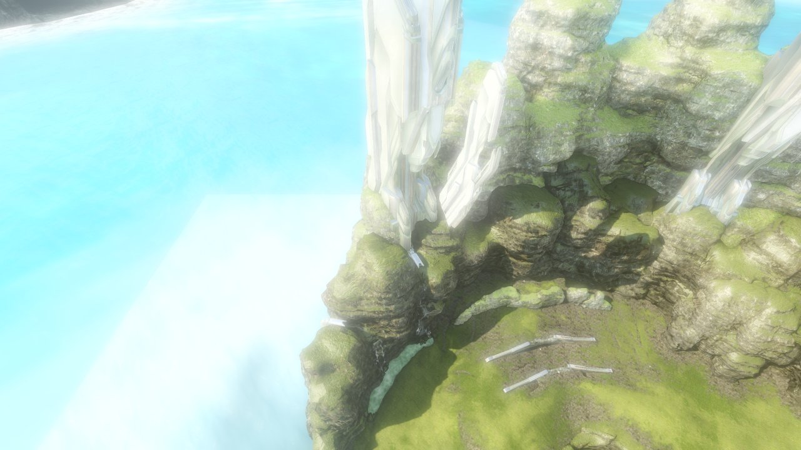
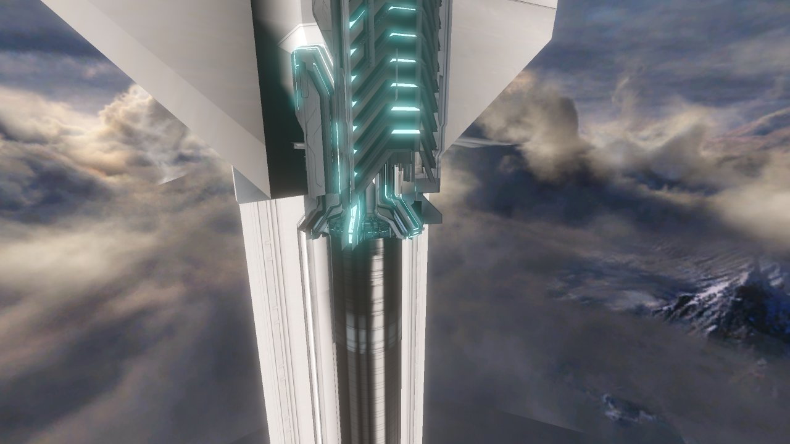

Halo 4 (experimental)
Halo 4 maps from MCC can be opened as a view-only scene. Forge editing and variant saving are not available for Halo 4.

ca_forge_ravine).
wraparound), from outside the arena.How to use it
- Halo 4 caches are detected from
<MCC>\halo4\mapsand from Halo 4 Workshop items, and appear in the map picker's Halo 4 (experimental) group (only shown when at least one exists). Load one like any other map. - The status line reads Halo 4 (EXPERIMENTAL, view-only): <map> — N draws / N tris, N objects, N textures … Forge editing and variant saving are disabled for Halo 4 maps.
- File ▸ Open .mvar… accepts Halo 4 variants (the game's
halo4\map_variantsandhopper_map_variantsfolders are quick links in the browser, and your own saves are under…\MCC\LocalFiles\<XUID>\Halo4\Map). The variant's base map is loaded automatically and its objects are rendered read-only. Variant titles that the game stores as localisation keys are resolved to their display names. - Headless rendering works the same way:
HMS_MAP=ca_forge_ravine HMS_SHOT=ravine.png ./hms-app, withHMS_MVARaccepting Halo 4 variants only.
What works
- Level geometry with diffuse textures (all common compressed formats).
- Baked lightmaps and the baked sun direction and colour, atmospheric fog, the map's exposure range and bloom settings.
- Material routing (opaque, alpha-tested, blended, additive), a shipped-shader lighting model, and the sky.
- Scenario objects (the level's own placed objects) in their bind pose.
- Reading shipped and user map variants and drawing their Forge objects (all shipped Halo 4 variants decode).
- The Halo 4 parser is pure Rust, so the native library is not needed for Halo 4 maps.
Not supported yet
- Forge editing of any kind: no selection, moving, placing or property editing of Halo 4 objects.
- Saving Halo 4 variants (Save is disabled; the file's integrity hash cannot yet be produced).
- Normal and specular maps, skinned/animated poses, particles, decals, decorators (grass), collision, camera stand-off.
- Variants of the newer version 51 format are refused.
Known issues
- Lighting uses the game's own baked lightmaps (two-lobe direction/intensity atlases, sun visibility and the baked sun), a Blinn/Phong material model with normal and control maps, cube reflections, fog and the filmic tone curve, all derived from the shipped shaders. Transparent surfaces (glass, water, foam), runtime lights and colour grading are not finished, so some surfaces can still look flat or off in tone.
- The default camera on campaign maps frames every BSP at once and can start outside the level. Use the object list or fly manually.
- Some instanced geometry may be mirrored or rotated incorrectly on asymmetric instances.
- Object boundary shape sizes and a few placement flags are decoded but not yet verified against the game.
Fallback switches
If a Halo 4 map fails to render, these environment variables turn parts of the pipeline off so the rest can still be viewed: HMS_H4_LIGHTMAP=0 (flat lighting), HMS_H4_SHADING=0 (flat diffuse), HMS_H4_NOTEX=1, HMS_H4_NOOBJ=1, HMS_H4_NOSKY=1.
Maps tested
Ravine (ca_forge_ravine), Haven (wraparound), Erosion (ca_forge_erosion), Impact (ca_forge_bonanza), Forge Island (dlc_forge_island), plus several campaign and Spartan Ops caches; variants including Settler (on Ravine) and Grifball Court (on Erosion).